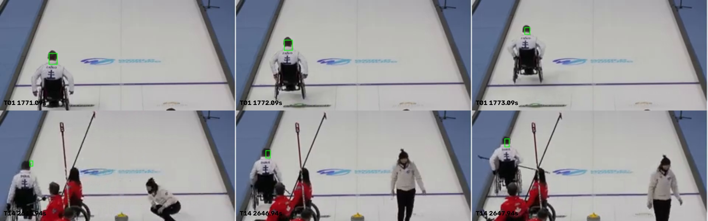
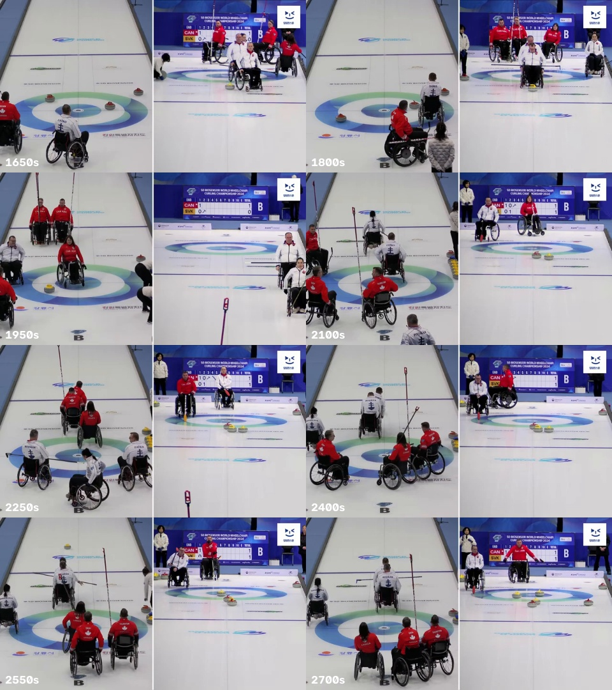
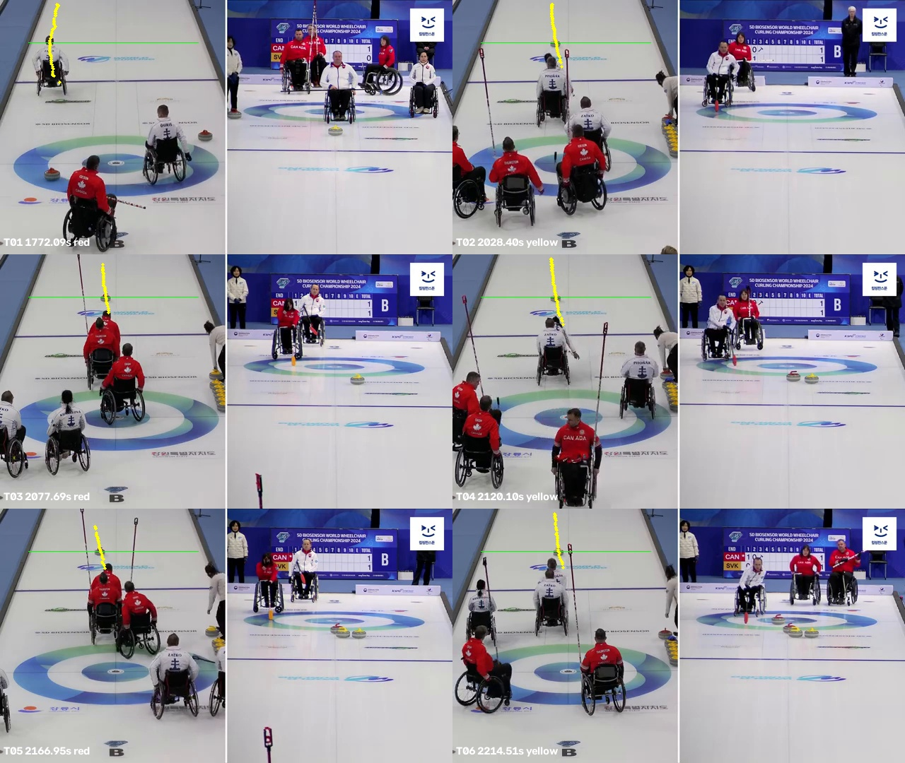
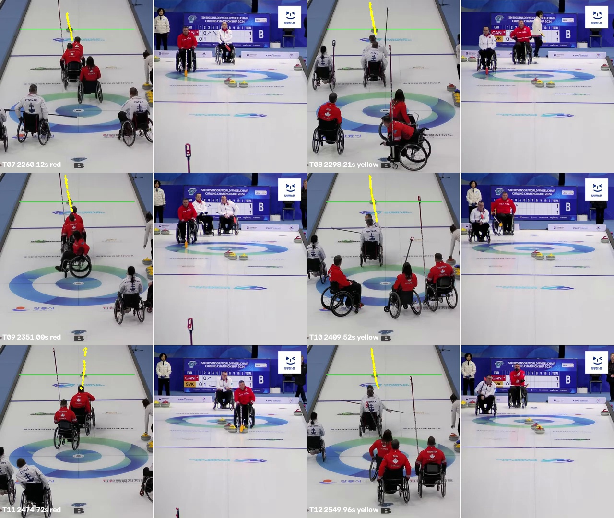
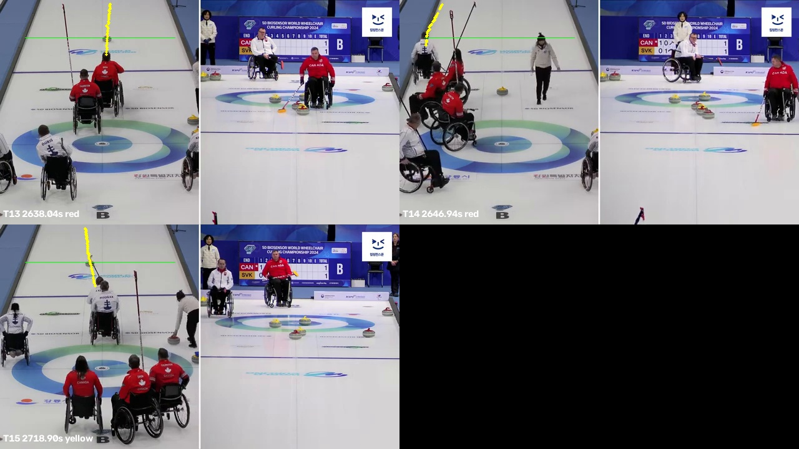

Canada–Slovakia 2024 · fixed interval 27:30–46:00 · unchanged detector settings.
15 provisional events; two visibly follow a player's head. No independent throw count or recall is established. The reserved Wetzikon recording remains excluded.
Full method and limitations · Published-label benchmark · Raw results
| Event | Video time | Detected colour | Review |
|---|---|---|---|
| T01 | 1772.088 s | red | AI review: follows player head |
| T02 | 2028.400 s | yellow | Provisional; not independently verified |
| T03 | 2077.687 s | red | Provisional; not independently verified |
| T04 | 2120.100 s | yellow | Provisional; not independently verified |
| T05 | 2166.952 s | red | Provisional; not independently verified |
| T06 | 2214.508 s | yellow | Provisional; not independently verified |
| T07 | 2260.125 s | red | Provisional; not independently verified |
| T08 | 2298.212 s | yellow | Provisional; not independently verified |
| T09 | 2351.000 s | red | Provisional; not independently verified |
| T10 | 2409.521 s | yellow | Provisional; not independently verified |
| T11 | 2474.720 s | red | Provisional; not independently verified |
| T12 | 2549.963 s | yellow | Provisional; not independently verified |
| T13 | 2638.038 s | red | Provisional; not independently verified |
| T14 | 2646.940 s | red | AI review: follows player head |
| T15 | 2718.900 s | yellow | Provisional; not independently verified |
Two candidate tracks, three timestamps each. Green rectangles are detector boxes; they follow the player's head. This is retrospective AI inspection, not a blind reference.




